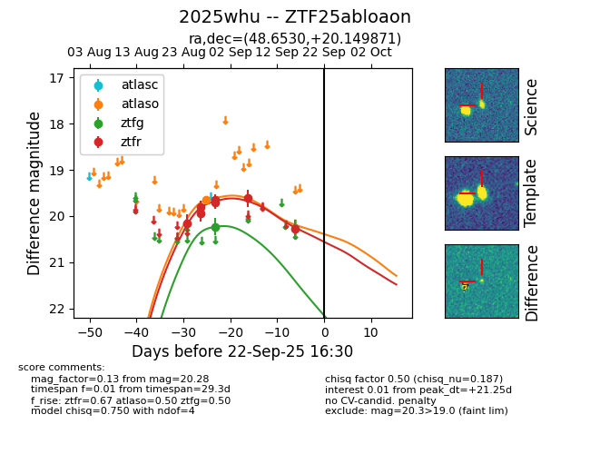
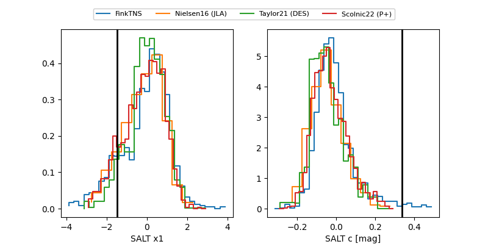

FINK: ZTF25abloaon
Lasair: ZTF25abloaon
ALeRCE: ZTF25abloaon
TNS: 2025whu
YSE: 2025whu
ZTF25abloaon (ztf,fink)
2025whu (tns,yse)
equatorial (ra, dec) = (48.6530,+20.14987)
galactic (l, b) = (162.9556,-31.37497)


last atlaso=19.65, ztfg=20.23, ztfr=20.28
1 atlaso, 1 ztfg, 7 ztfr detections